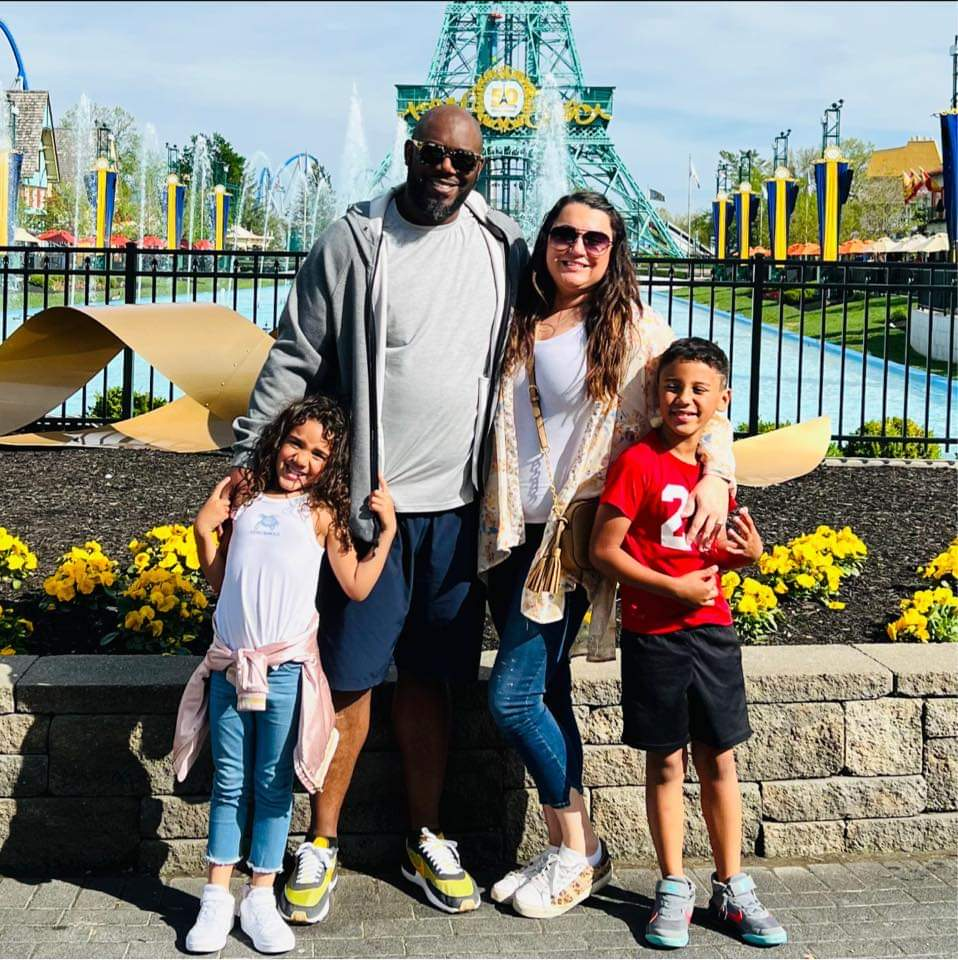

Kings Island with my family
Bio Timeline
- 1982: I was born in Cincinnati, Ohio
- 2001: I graduate from Cincinnati Hills Christian Academy and enroll @ University of Cincinnati
- 2002: I dropped out of college to join the US Army, after September 11, 2001
- 2004: I was deployed to Iraq in Operation Iraqi Freedom II
- 2005: Continued deployment until March. Returned stateside to Ft. Hood, TX to complete service agreement
- 2006: I was honorably discharged from the US Army
- 2007: I re-enrolled back to the University of Cincinnati to study Psychology
- 2011: I graduated from the University of Cincinnati with a BA in Psychology
- 2013: I bought my first house
- 2014: I met my fiance at a Memorial Day barbeque
- 2015: The birth of my first child, my son Isaiah
- 2017: The birth of my second child, my daughter Zoe
- 2020: Enrolled at Indiana Wesleyan University during the Covid-10 pandemic to pursue my MBA
- 2021: We built another home
- 2021: I graduate from Indiana Wesleyan University with my MBA
- 2022: I lost my job as an IT Recruiter for Amazon and finally enrolled into Kable Academy, where I learn coding
View my LinkedIn page